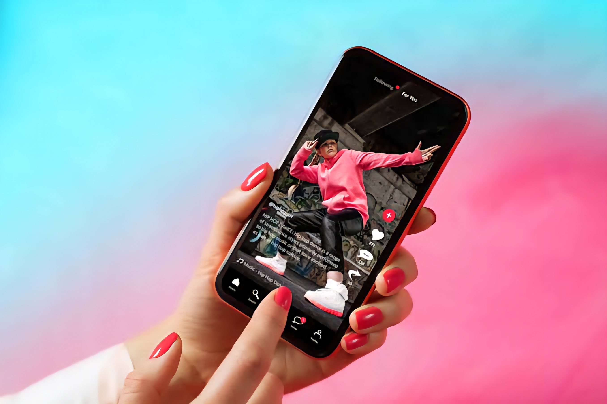

2026 PLATFORM AUDIT
Today, I want to talk about the incredible rise of TikTok. In just a few years, TikTok has transformed from a simple video app into a global powerhouse.
As of 2026, it has grown to nearly 2 billion users worldwide, with millions joining every day. In the United States alone, over 100 million people use TikTok, making it one of the most popular platforms in the country.
What makes TikTok special is not just its size, but its influence. People don’t just watch videos—they create trends, build businesses, and even learn new skills.
Users spend up to 90 minutes daily on the app, showing how deeply it has become part of everyday life.

TikTok is also changing how we discover content. Instead of searching, content finds you—through smart algorithms that understand what you like. This has made it one of the fastest-growing platforms in history.